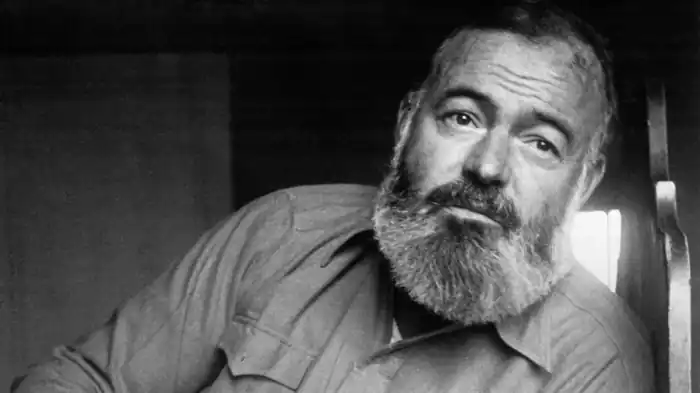

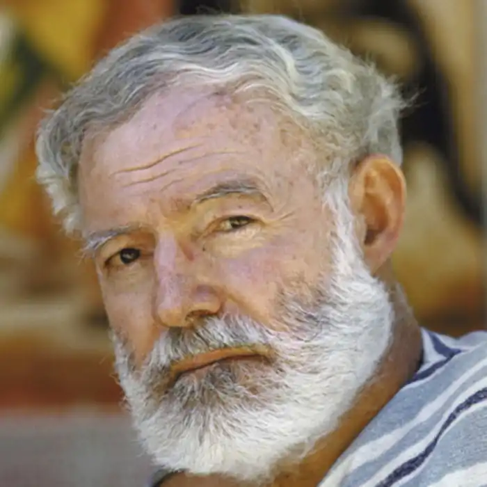
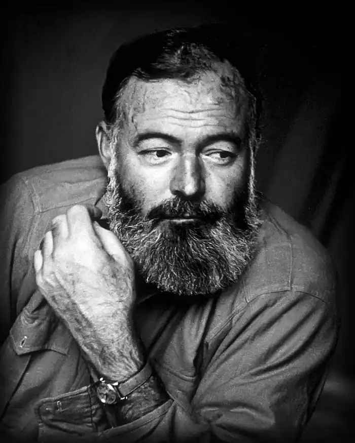
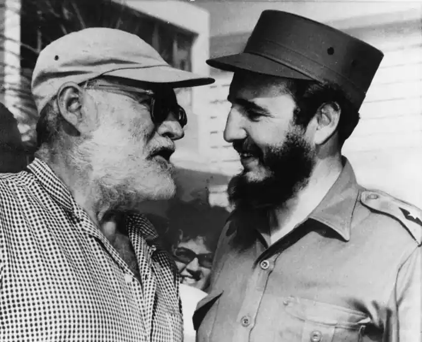


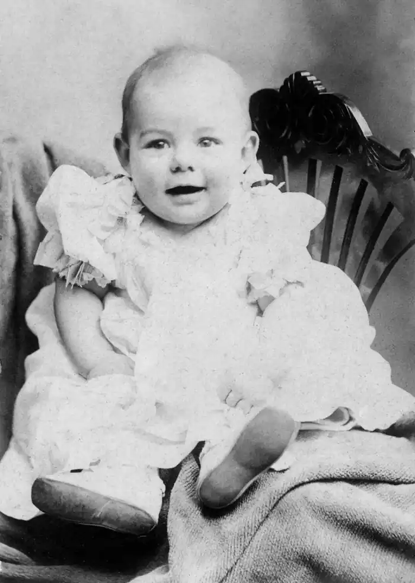
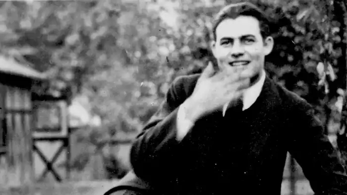


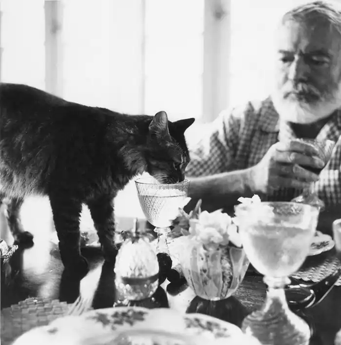

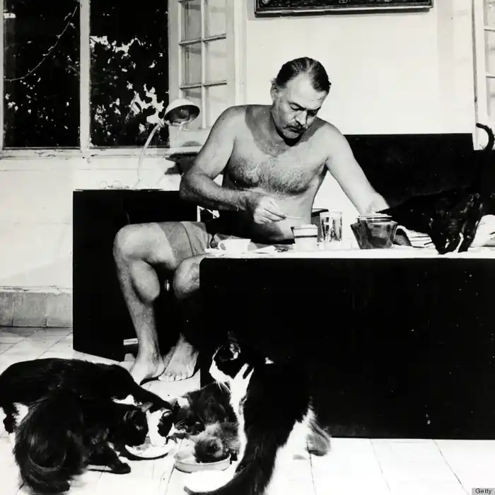

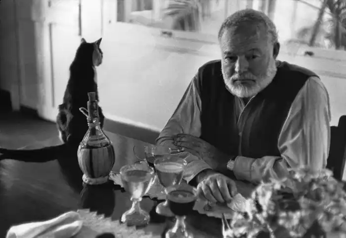
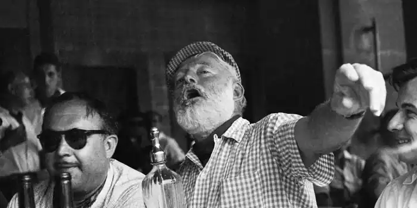


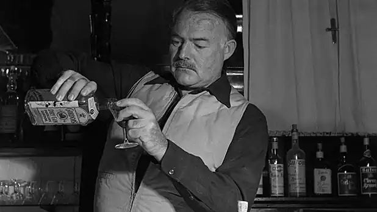

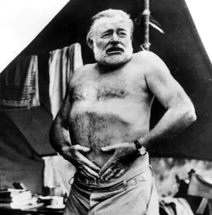

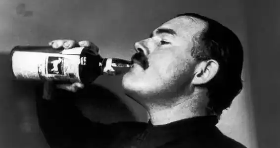
ЕРНЕСТ ХЕМІНГУЕЙ
(1899-1961)
Ернест Міллер Хемінгуей народився 21 липня 1899 року в Ок-Парке, невеличкому, чистенькому містечку, поруч з Чикаго — найбільшим торгово-промисловим центром Середнього Заходу. Майбутній письменник ріс у культурній, забезпеченій родині, і батьки, кожен по-своєму, намагалися спрямувати його інтереси. Батько — лікар за професією й етнограф-аматор за уподобаннями — захоплювався полюванням, брав з собою в ліси Ерні, водив його в індіанські селища, намагався привчити сина спостерігати природу, звірів, птахів, придивлятися до незвичайного життя індіанців. Мати — аматорка музики й живопису, яка навчалася співу й дебютувала у нью-йоркській філармонії, тут, у своєму містечку, змушена була задовольнятися викладанням музики, співом у церковному хорі, а сина прагнула навчити грі на віолончелі. Музиканта з Ерні не вийшло, але любов до гарної музики та картин залишилася у Хемінгуея на все життя. Батько — супутник його дитинства й отроцтва. Але після того як йому виповнилося п'ятнадцять років, Ернест не мав нічого спільного з батьком (проблема "батьків і дітей"). Пізніше батько виникає лише у примарних спогадах і снах, а супутник його змужнілості, приклад завзятої і мужньої денної праці — це дід, учасник Громадянської війни 1861 — 1865 років. Ок-Паркська середня школа, де Хемінгуей отримав середню освіту, славилася високим рівнем загальноосвітньої підготовки. Майбутній письменник із вдячністю згадував своїх викладачів рідної мови та літератури, а шкільна газета "Трапеція" і шкільний журнал "Скрижаль" дали йому можливість спробувати свої сили в літературі (він пише фейлетони та короткі оповідання). За що б не брався Ерні, він в усьому намагався бути першим. Був капітаном і тренером різних спортивних команд, отримував призи з плавання і стрільби, був редактором "Трапеції". Є думка, що все це були спроби Хема (як його звали близькі друзі) і довести собі та навколишньому світу, що він не дівчинка. Річ у тім, що батьки письменника дуже хотіли мати доньку і до семи років вдягали Ерні в дівчачу сукню. На все життя ці спогади дитинства стали ахіллесовою п'ятою Хемінгуея, комплексом неповноцінності, який він переборював весь час, займаючись тільки "мужніми" справами: спортом, полюванням, коридою, військовою журналістикою. У шкільні роки Хемінгуей багато читав. Пізніше, вже після "Фієсти", він стверджував, що писати навчився, читаючи Біблію. З традиційного шкільного читання Хемінгуея не зачепили ні вірші Теніссона і Лонгфелло, ні романи Скотта, Купера, Гюго, Діккенса. Зате Шекспір і Марк Твен залишилися уподобанням на все життя. Після закінчення школи юнак якийсь час працює у невеличкій газеті. Коли Хемінгуею виповнилось дев'ятнадцять років, він їде до Європи, щоб добровольцем взяти участь у Першій світовій війні, яка стала для нього першим життєвим університетом. Воює він у складі транспортного корпусу, в одному з санітарних загонів, що його США направили в італійську армію. У ніч на 9 липня Хемінгуей, потрапивши під мінометний вогонь, був важко поранений. При огляді відразу на місці в Хемінгуея витягли двадцять вісім осколків, а всього нарахували їх двісті тридцять сім. Хемінгуея евакуювали до Мілана, де він пролежав кілька місяців і переніс кілька серйозних операцій коліна. Вийшовши з госпіталю, Хемінгуей був нагороджений італійським військовим хрестом і срібною медаллю за доблесть — другою за значенням військовою нагородою. У 1919 році Хемінгуей повертається додому до Сполучених Штатів в ореолі героя, одним з перших поранених, одним з перших нагороджених. Якщо життєва біографія Хемінгуея почалася, власне кажучи, в окопах на річці П'яве, то його літературна біографія бере свої витоки в Парижі 20-х років, де він оселяється після війни. Париж у ті часи був Меккою модернізму. Письменники, поети, художники з усіх усюд з'їжджалися сюди, щоб зануритися в цю атмосферу, де руйнувались колишні цінності і створювалися нові, породжені XX століттям. У цей нуртуючий вир і занурився молодий журналіст, який твердо вирішив стати письменником. У Парижі Хемінгуей познайомився з такими знаковими постатями модерністської літератури, як Джеймс Джойс, Гертруда Стайн. Вони були кумирами, непорушними авторитетами для молодих літераторів. Хемінгуей прислухався до Гертруди Стайн, уважно вивчав досвід Джойса. Прислухався, вивчав, але у своїй творчості шукав власний шлях. Одночасно з пошуком свого шляху в літературі визначався і світогляд письменника, формувалися його політичні переконання. Він багато подорожував у ті роки Європою: як кореспондент кількох американських газет побував у Німеччині, Швейцарії, Іспанії, Туреччині. В Італії він зрозумів, що таке фашизм, і на все життя зненавидів його. Для будь-якого письменника важливо визначити своє місце у світі. Хемінгуею в цьому допомогла греко-турецька війна, звідки він у 1922 році як військовий журналіст посилав свої кореспонденції. Колишній фронтовик побачив війну зовсім іншими очима, що визначило його громадську позицію: "писати нещадну правду про життя". Дебютом у світі літератури для Хемінгуея-журналіста став збірник "Три оповідання і десять віршів" (1923). Відтоді він вирішує покінчити з журналістикою, бо, за особистим зізнанням, "телеграфний стиль репотажу став затягувати його". Етапною в творчості Хемінгуея стає книга "В наш час" (1925) — збірник оповідань, об'єднаний спільним задумом та ідейно-тематичним спрямуванням, а також особливим стилем — лаконічним, стриманим. Пізніше подібний принцип організації тексту автор визначить як "принцип айсберга". Збірник "В наш час" цікавий ще й тим, що в ньому Хемінгуей вперше зачіпає проблеми "загубленого покоління", геніально продовжені в повісті "Фієста" (1926) і романі "Прощавай, зброє!" (1929). Останній твір приніс світову славу й визнання Хемінгуею. Антивоєнна проблематика подається автором у протиставленні страхітть війни та найкращого людського почуття — кохання. Трагічна історія кохання лейтенанта Генрі й медсестри Кетрін (Ромео і Джульєтта епохи Першої світової війни) назавжди запам'ятовується читачам. На загальний тон роману, визначення одного з його лейтмотивів — утрата всього дорогого й улюбленого, вплинули події особистого життя письменника (самогубство батька та вкрай небезпечні пологи дружини). У середині 1927 року Хемінгуей удруге одружився з Поліною Пфейфер — паризькою журналісткою, американкою з Сент-Льюїса. Улітку 1928 року (у самий розпал роботи над романом "Прощавай, зброє!") вона перенесла важкі пологи. Дитина народилася шляхом кесаревого розтину. На щастя, вижили і мати, і син (але пов'язані з цим переживання відбилися в романі і залишилися незабутніми). Тієї ж осені 1928 року в Ок-Парку наклав на себе руки його батько. Підсумком роздумів письменника над подіями в Європі кінця 30-х років стали романи "Мати і не мати" (1937) і "По кому подзвін" (1940). Перший відобразив зміну у світогляді письменника, пошуки подолання самотності та перехід до соціальної проблематики. Другий — величний епічний твір, в якому автор з філософських позицій усвідомлює події війни в Іспанії. Новим для Хемінгуея стає те, що в романі "По кому подзвін" головне місце посіли не приватні долі героїв, а доля героя і революції. Під час Другої світової війни Хемінгуей створює на Кубі приватну агенцію по боротьбі з фашистами. Разом з друзями на яхті "Пілар" патрулює узбережжя Атлантичного океану в пошуках німецьких підводних човнів. У 1944 році бере участь у визволенні Парижа. Активна боротьба з фашизмом поєднується з журналістською діяльністю. Нариси та репортажі воєнних часів увійшли в книгу "Люди на війні" (1942). Під час війни Хемінгуей також працює над книгою про море, яка так і не була закінчена й вийшла вже після його смерті ("Острови в океані" (1970)). 1952 рік стає черговою перемогою Хемінгуея: він пише підсумковий твір свого життя — повість "Старий і море". Це квінтесенція роздумів і міркувань письменника про людину і її місце у всесвіті. Наступні два роки стають роками вшанування великого Хема вдома (Пулітцерівська літературна премія (1953)) і визнання його діяльності у світі (Нобелівська премія (1954)). Наступні роки свого життя Хемінгуей багато мандрує (Іспанія, Франція, Східна Африка), але постійно живе на Кубі — країні, яка стала для письменника новою батьківщиною ще з часів Другої світової війни. Останнім завершеним твором великого Хемінгуея стала книга спогадів "Свято, яке завжди з тобою" (1960, опублікована 1964), що розкривала своєрідну атмосферу художнього життя Парижа 20-х років. В останні роки життя Хемінгуей хворіє, його переслідує синдром смерті батька (кілька разів він робить невдалі спроби покінчити життя самогубством, навіть перебуває деякий час у лікарні). Вранці 2 липня 1961 року в Кетчумі (Айдахо, США), вставши зрання, бере зі свого численного арсеналу улюблений карабін і зводить свої порахунки з життям. "Старий і море" Повість "Старий і море", на перший погляд, може здатися дуже простою, однак, попри невеликий об'єм, дуже містка, її визначають як філософську притчу. Проста, невибаглива історія старого рибалки Сантьяго стає узагальненою історією складного шляху людини на землі, яка кожного дня веде нескінченну боротьбу за існування, поєднуючи її з намаганням жити у злагоді з навколишнім світом. Один із прототипів повісті — рибалка Григоріо Фуентес, котрий жив у присілку Кохімара, на Кубі. Одного разу, коли рибалка та письменник пливли на шхуні, вони зустріли старого й хлопчика, які боролися з великим марліном. Ця зустріч і стала поштовхом до створення повісті "Старий і море". "Мені ніколи не доводилось вибирати героїв, скорше, герої вибирали мене. Як і багато моїх попередників, я захоплювався людьми сильними, які підкоряють собі обставини",— писав Е. Хемінгуей. Сюжет повісті дуже простий: старий рибалка Сантьяго, який живе надголодь, вийшовши в море, піймав найбільшу рибину за все своє життя, таку велику, що не може затягти її до човна і транспортує за бортом. Акули, які почули запах крові, потроху об'їдають велику рибину і, незважаючи на спротив старого рибалки, повністю її з'їдають. Човен Сантьяго повертається до рідного берега лише з кістяком риби, але на боці старого мор